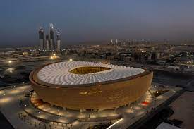
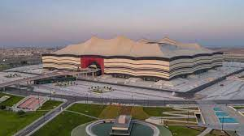
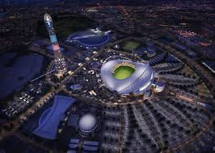
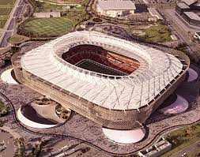
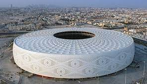
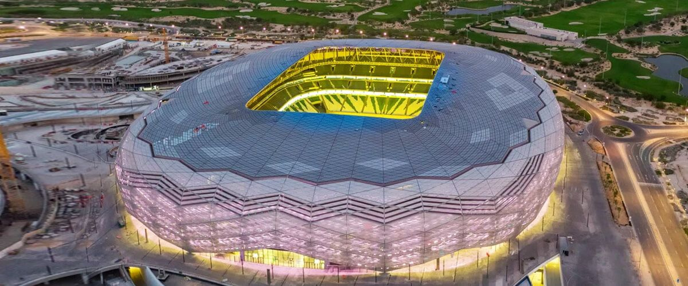
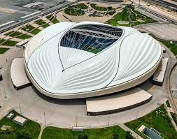
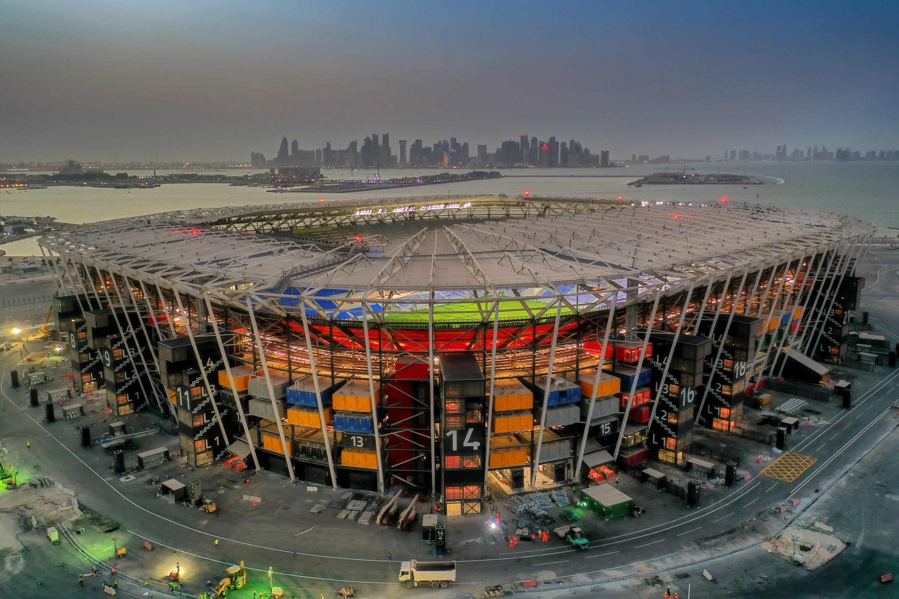

Capacity: 88,966
Lusail Stadium aka Lusail Iconic Stadium is located about 20 km north of Doha. This stadium will host 10 games of FIFA World Cup 2022 including the final. After the World Cup, it is expected to be reconfigured into a 40,000-seat stadium. Excess seating will be removed, and other parts of the building repurposed as a community space with shops, cafés, athletic and education facilities, and a health clinic.
Capacity: 68,895
The stadium is located about 50 kilometers away from Doha in Al Khor city. A total of 9 games will be played here in FIFA World Cup 2022, including the Opening game and Semi-Final. After the World Cup, it will be converted into a 32,000-seat stadium. Seats from the upper tier will be removed and donated to other countries, then the vacated space being converted into a five-star hotel, shopping mall and sports facility.
Capacity: 45,857
This stadium is located about 5 kilometres west from the centre of Doha. Originally opened in 1976 and has hosted the 2011 AFC Asian Cup Final and 2019 World Athletics Championships. In the FIFA World Cup 2022, this venue will host 8 games including two Japan's Group stage matches and Third Place play-off.
Capacity: 45,032
The stadium is also called Al-Rayyan Stadium because of the name of city that this stadium situated. This venue is located about 20 km west of Doha. The former stadium is built in 2003 and renovated for FIFA World Cup 2022. A huge 'media facade' surrounds the stadium which will act as a screen for projections, news, commercials, sports updates, current tournament information and matches. In the FIFA World Cup 2022, this venue will host 7 games. After the World Cup the stadium will be reduced to 21,000 seats.
Capacity: 44,400
Al Thumama Stadium is in Doha, and is located near Hamad International Airport. This stadium will host 8 games in FIFA World Cup 2022 including Quarter-Final. After the tournament the seats will be reduced to meet local needs and provide quality sporting infrastructure to developing nations. The remaining 20,000-seat arena will be used for football and other sporting events, and branch of a sports clinic will open on site, as well as a boutique hotel, which will replace the stadium’s upper stands.
Capacity: 44,667
This stadium is located in Al Rayyan, about 7 km northwest of Doha. 20 percent of its building materials identified as green, the stadium is among the world's most environmentally sustainable stadiums. In May 2019, Education City Stadium received a five-star GSAS rating. This stadium will host 8 games in FIFA World Cup 2022 including Quarter-Final game. The stadium's modular upper tier will be removed, with the seats donated to a country which lacks sporting infrastructure. After the tournament, the stadium will become a sporting hub for the local community, including students and faculty.
Capacity: 44,325
This stadium is in Al-Wakrah city, located about 22 km south of Doha. This stadium will host 7 games in FIFA World Cup 2022. The sports complex in thi stadium includes a multipurpose room, with swimming pools and spas and a shopping center with green roofs. The entrance to the stadium will be on a wooded square. After the tournament, the capacity will be reduced to 20,000 and there will be a marketplace and community facilities, including a mosque and school.
Capacity: 44,089
Stadium 974 is the first temporary stadium in FIFA World Cup history. The venue is named after Qatar's international dialing code and the number of shipping containers that compose this stadium. The stadium is located about 10 km east of Doha. The entire structure is designed to be dismantled and reassembled elsewhere after the World Cup. In the tournament, 7 games will be hosted in this venue.